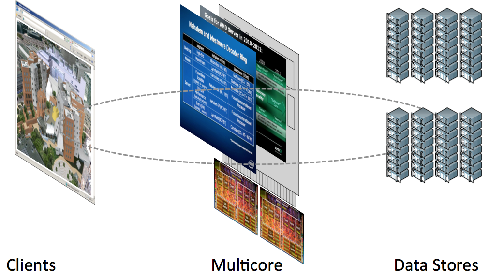
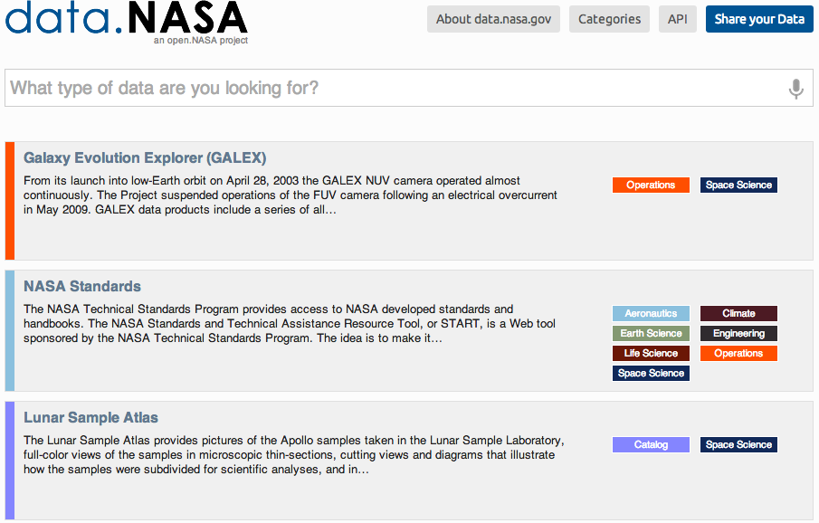
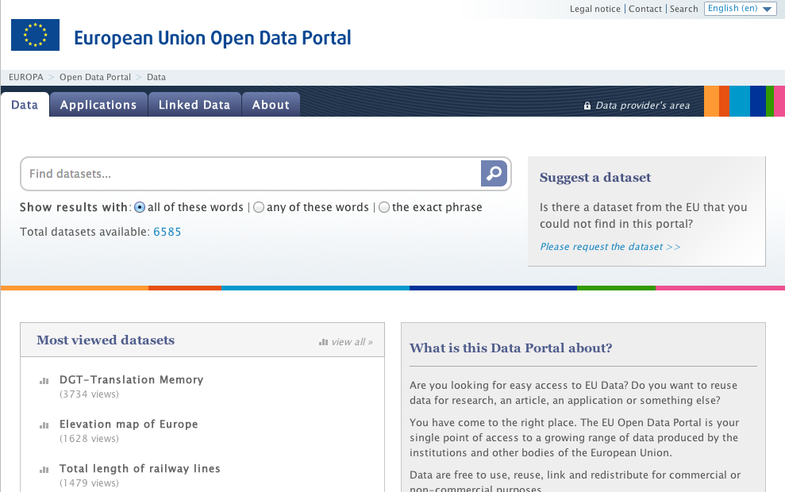
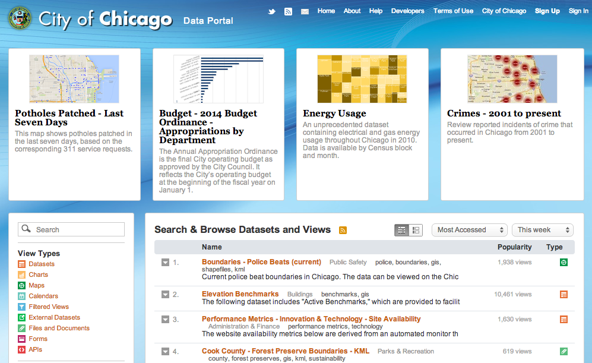

Open Data Platforms
Cloud Architecture
Big clouds?
City Open Data

NYC Open Data
NASA Open Data
U.S. Open Data
EU Open Data
PS7 - City of Chicago Open Data
Active Learning 1
- Go to, https://data.cityofchicago.org/
- Locate the 2012 crime dataset.
- Select the month of December (use filter).
- Download the data as JSON
Active Learning 2
- Clean up file, remove metadata
- Write code to load file
- Write array length to console.
- Write loop through data.
- Write latitude and longitude to console.
Active Learning 3
Make a map for chicago. Use: 41.886903, -87.722740